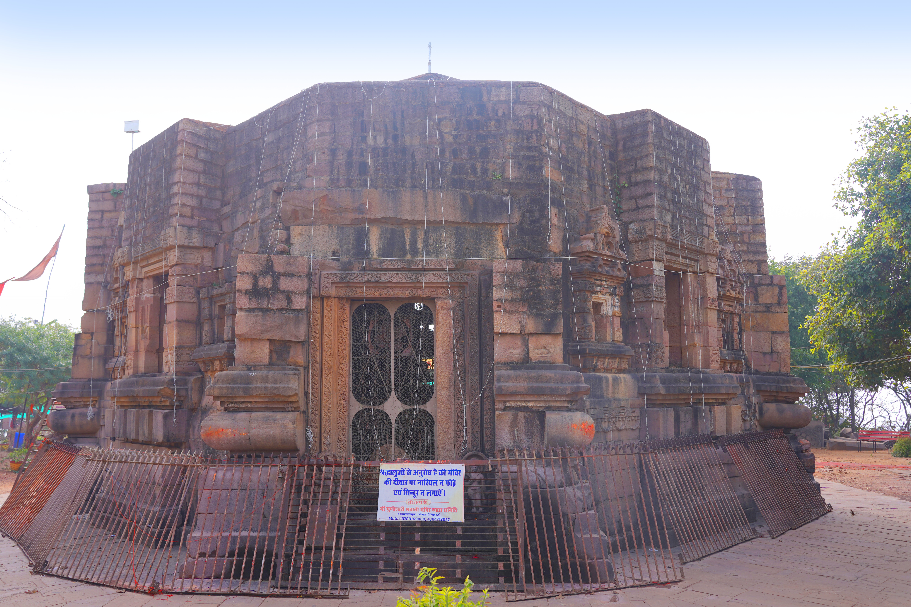

Punaura Dham, Sitamarhi
Traditional birthplace of Sita, the starting point of Bihar's Ramayan Circuit.
Journey through the legendary lands associated with the epic Ramayana
Sites in Bihar tied to the Ramayana, from Sita's birthplace to river confluences still visited by pilgrims.

A major Hindu shrine on the Phalgu, visited for ancestral rites tied to the Ramayana tradition.
Traditional birthplace of Sita, the starting point of Bihar's Ramayan Circuit.

A sacred tank and temple precinct in Sitamarhi associated with Sita.

An early Shiva shrine near Sitamarhi on the Ramayan trail.

A temple site in Darbhanga linked to the Ahilya episode of the Ramayana.
A historic town on the Ganga, remembered both in epic tradition and later Indian history, and known for soan papdi.
Ancient confluence of the Ganga and Gandak, known for its fair and river landscape.